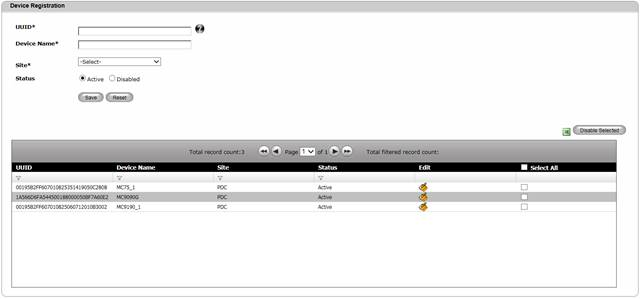
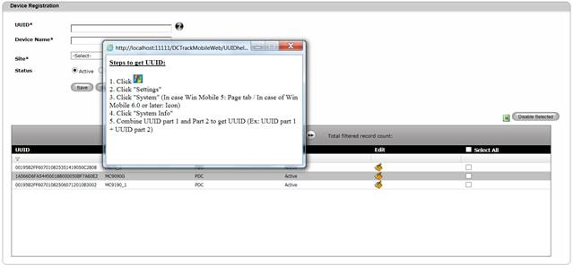
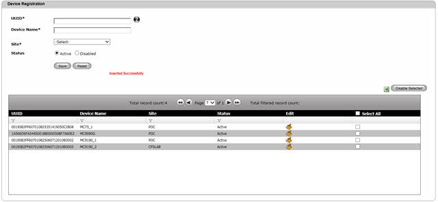

Create Device
To register/create Device,
1. Navigate Masters>>Register Device on the DCTrackMobileWeb menu bar.
You will see the Register Device screen.

Figure 60: Register Device screen
2. Click on help icon to see the steps to get the UUID of a Motorola handheld device.

Figure 61: How to get UUID
3. Enter information on the required fields.
4.
Click Save  button to complete the creation process or else
click Reset
button to complete the creation process or else
click Reset  button to refresh the page fields.
button to refresh the page fields.
Once created, the Register Device details will be displayed on the Table View and successful message is displayed.

Figure 62: Register Device Screen – Successful Creation